SuperFarmer E-Commerce Venture
A rural e-commerce and live-commerce venture connecting local agricultural products with higher-end consumer demand through digital marketing, supplier coordination, logistics partnerships, and business model design.

10person entrepreneurial team led
8supplier negotiations with 15% lower core procurement cost
15livestream commerce sessions with 30,000+ total units sold
RMB 100k+cumulative profit supported by sales-data analysis
2nd / 3rdNational Business Elite Challenge and China Digital Marketing Competition awards
Fundedselected as a Shandong Provincial Department of Education funded project
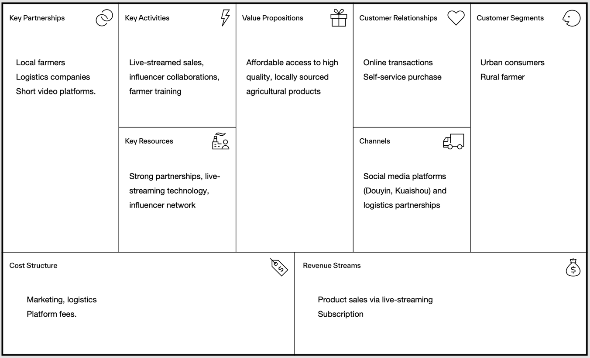
Report Evidence Gallery
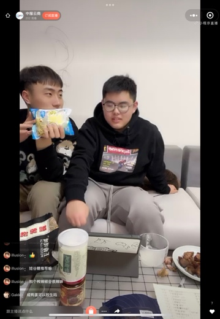
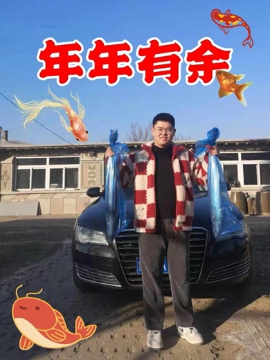
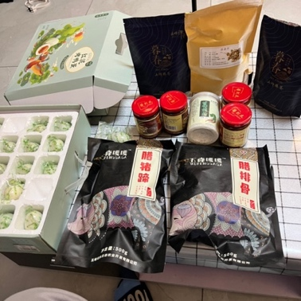
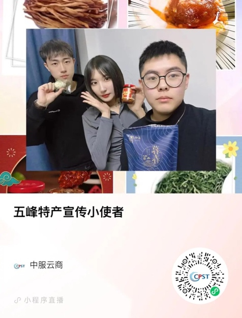
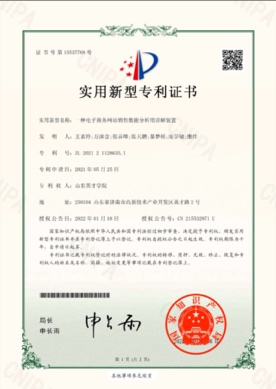
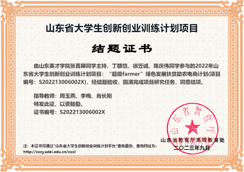
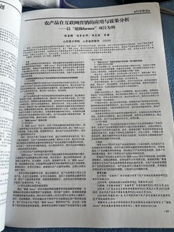
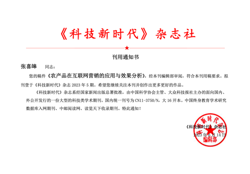
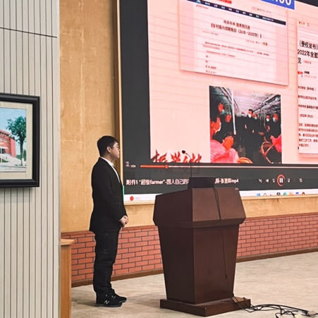
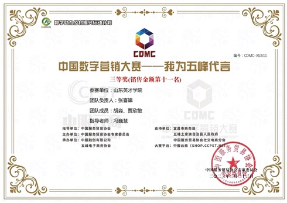
Strategic Assessment
SWOT
Strengths
- Innovative live-streaming business model.
- Sustainability focus aligned with rural development initiatives.
- Recognition through honours and patents.
- Effective use of data analytics and AI.
Weaknesses
- Dependence on third-party platforms.
- Limited management roles and processes.
- Need for stronger financial forecasting.
Opportunities
- International market expansion.
- Proprietary platform and technology enhancement.
- ESG investment interest and loyalty programs.
Threats
- Competition from larger platforms.
- Market fluctuation and regulatory risks.
- Rapid technology change.
PEST
Political
Alignment with rural development policy, ESG initiatives, and potential e-commerce taxation risks.
Economic
Demand driven by China's growing middle class and e-commerce growth, balanced against instability and rising labour costs.
Social
Consumers increasingly prefer sustainable, healthy, locally sourced products and brands that support farmers.
Technological
AI personalization, mobile apps, livestreaming, and proprietary platform development can improve efficiency and customer fit.